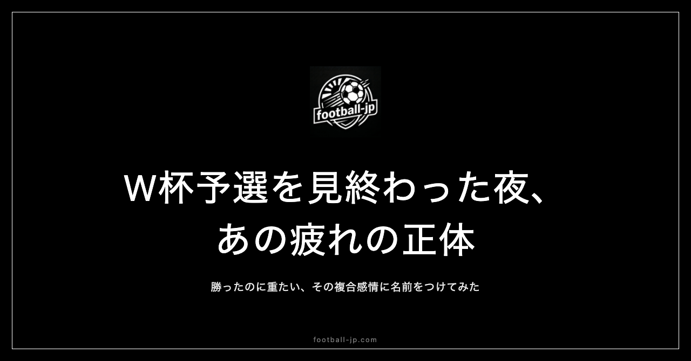

W杯予選を見終わった夜の、あの言葉にできない疲れの正体
W杯予選が終わった夜、なんとも言えない疲れが残りました。勝ったのに、なぜかすっきりしない。負けたわけでもないのに、どこかが重たい。——あの感覚に、名前がないことがずっと気になっていました。

「勝ったのに疲れた」の正体
試合が終わったあとの疲れは、2種類あると思っています。
ひとつは、完全燃焼した疲れ。競った展開で、最後に勝ちをもぎ取った夜の疲れです。体が重くても、頭はどこかすっきりしている。翌朝、目が覚めたら「よかった」と思える種類の疲れ。
もうひとつは、W杯予選特有の疲れです。勝ち点3は取った。でも内容がどこかぎこちなかった。三笘薫のような欧州組が来ていない。相手が引いてきて、攻めあぐねた90分だった。そういう試合を見終わったあとの夜に残るのは、達成感と物足りなさが混ざった、名前のつけにくい感覚です。
試合が始まる前から、すでに予兆があります。「今日は三笘薫がいない」という情報が頭にある状態でキックオフを迎える。欧州で見ている「あの選手」が代表で同じようなプレーをしてくれるとは限らない、という期待値の調整が、観戦前から始まっています。
そして試合が終わると、「やっぱりそうか」という確認と、「でもそれでも勝ち点は取った」という折り合いが同時に来る。その複合感情が、翌朝にじわりと疲れとして残ります。
「本番はW杯」という宿命
代表戦には、独特のむずかしさがあります。三笘薫はブライトンで週に1試合、フルでプレーしています。コンディションが整っていて、チームメイトとの連携も熟成されている。でも代表に呼ばれると、数日間の合宿で戦術を合わせ、慣れない相手と試合をする。当然、クラブでの輝きがそのまま出るわけではありません。
W杯予選は出場権を懸けた試合なのに、結果がどこか「通過点」に見えてしまう自分もいます。本番はW杯、そこが頂点だとわかっているから、予選の勝ち点1つひとつを素直に喜びきれない。それが、あの疲れの正体のひとつかもしれない、と最近思っています。
もうひとつの正体は、「見ながら別の試合を想像している」ことかもしれません。W杯予選を見ながら、頭の中では「本番のW杯でこの選手はこのポジションに入るのか」という計算が走っています。現在の試合を現在として見ていない。これが疲れの原因として、意外と大きい気がしています。
「見届ける義務」みたいなもの
それでも、見てしまいます。好きな選手が出ていなくても。内容が悪くても。「絶対見よう」と決めているわけでもないのに、気づいたらテレビやスマホの前にいます。
これを友人に話したら「それって義務感じゃないの?」と笑われました。でも義務じゃないんです。もし義務なら、見終わったあとにあんなに疲れない。義務なら、感情が動かないはずだから。
おそらくこれは、「見届けたい」という気持ちに近い。代表が今どこにいるか、何を試みているか、何が足りないか——全部を知っていたい、という感覚。結果だけ追いかけるのではなく、過程ごと引き受けたい、という感じでしょうか。
「見届けたい」という感覚は、football-jpを作ることにもつながっています。68名の日本人海外組の試合日程を管理し続けているのは、「日本代表につながる選手たちが今どこで何をしているか、全部把握していたい」という気持ちからです。試合の結果だけじゃなく、コンディション、出場時間、負傷状況——W杯本番で何が起こるか予測するために必要な全情報を追い続けること。それが、あの「見届けたい」という感覚の延長にあります。
試合終了後の「あの数十分」
W杯予選の試合が終わったあと、すぐには眠れません。深夜か早朝に試合を見終わって、画面が消えたあとも、頭の中では試合が続いています。「あのシーン、なぜ決めきれなかった」「後半の戦術変更はどういう意図だったんだろう」「次の試合にはあの選手が戻ってくるのか」。
翌朝、試合の詳細なレポートや専門家の分析を読み始めます。自分が感じた「何かが引っかかる」という感覚が、文字になっているのを読むと、「そうそう、それだ」となる。あるいは「それだけじゃない、もっと他の要因があるはず」と反論したくなる。この「試合の後処理」の時間が、W杯予選を見続ける動力源になっている気がします。
「同じ試合を見ていても、見えているものが違う」という話
W杯予選の試合について、同じ試合を見た友人と話すことがあります。「今日はよかった」「今日は悪かった」——この評価が、見ている人によって全然違うことが多い。勝ち負けだけを見ている人には「勝ったからよかった」になる。内容を見ている人には「勝ったが内容は課題が残った」になる。特定の選手を追っている人には「あの選手の調子が心配だった」になる。
football-jpで毎日選手のデータを追いかけていると、代表戦の見方が少し変わります。「今日の試合でAという選手は出場時間が短かった、先週クラブで累積疲労があったからかもしれない」という文脈が頭にある状態で見るようになる。この「見方の違い」を知ってから、W杯予選の試合後に感じる疲れの質が少し変わりました。「よくわからないまま疲れた」から「ある程度わかった上での疲れ」になった。わかった上での疲れの方が、次も見たくなります。
疲れながらも、また見る理由
W杯予選を見終わった夜は、少し疲れます。でもそれは、感情が動いた証拠でもあります。「どうでもいい」と思っている試合の後は、疲れない。何かを感じているから、疲れる。
試合後の疲れは、「次も見よう」という気持ちに自動的に変換されています。疲れるとわかっているのに見る。見るから疲れる。疲れるからまた見たくなる。この循環が、W杯予選を90分×複数試合、シーズン通じて追い続けることを可能にしている仕組みなのかもしれません。
W杯予選は、最終的にW杯本番への「橋渡し」です。予選中に感じた疲れや物足りなさが、本番への期待に変わっていく。本大会でグループステージを突破したとき、予選から追い続けてきた積み重ねがあるから、喜びの深さが違う。だから疲れながらも見続ける。
「疲れを言葉にする」ことの意味
「言葉にできない疲れ」は、言葉にしようとしないと言葉にできないまま消えていきます。何度も似たような疲れを感じながら、それが何なのかを考えないと、ただ疲れが来て消えていく繰り返しになる。でも言葉にしようとすると、構造が見えてきます。達成感と物足りなさの混合。「本番はW杯」という意識からくる予選の位置づけ。見届けたいという感覚。これらが全部、「W杯予選を見終わった夜の疲れ」という一つの感覚の中に収まっていた。
W杯予選を見終わった夜の疲れに名前をつけようとしたこの試みが、次の予選をより深く楽しむための準備になっていれば、書いた意味があります。